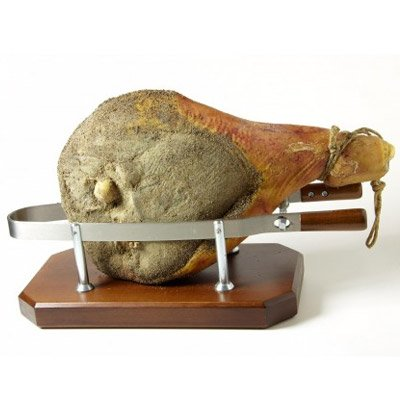
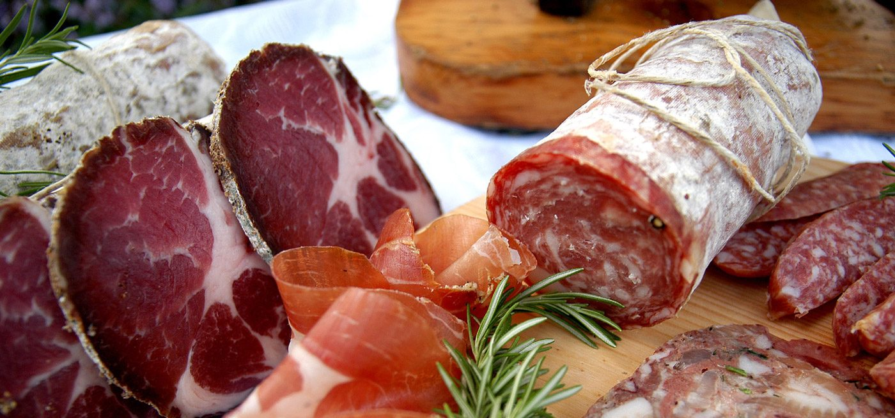
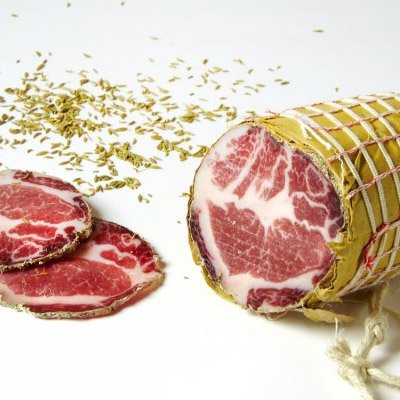
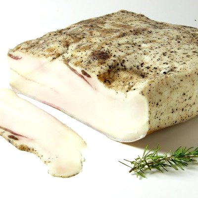
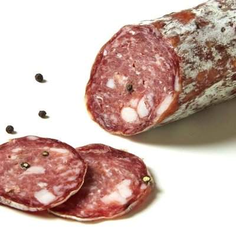
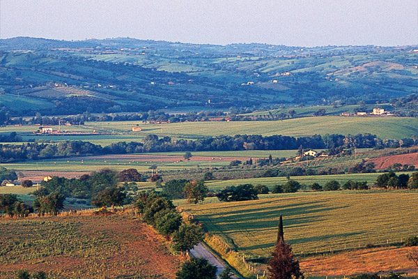
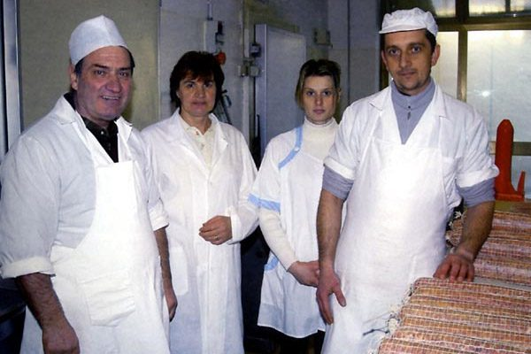
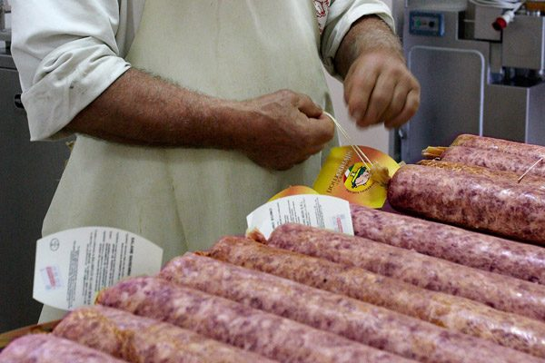
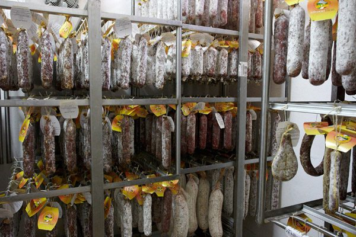

Prosciutto crudo
Sapore delicato, con giusta sapidità e aroma fragrante: il carattere viene dai metodi di lavorazione e stagionatura di una volta.
Torniella · Alta Maremma Toscana
Prosciutto, capocollo, lardo e salame toscano lavorati a mano a Torniella, antico borgo medievale dell'alta Maremma Toscana. Una famiglia, un'aria fresca e asciutta, le ricette di una volta.
Anche da Harrods e Fortnum & Mason, a Londra

I salumi
Carni selezionate con rigore e stagionate nell'aria di collina. Accanto ai classici, finocchiona, prosciutto di cinghiale, pancette e salumi aromatizzati con erbe, pistacchi, vino, funghi o tartufo d'Alba.

Sapore delicato, con giusta sapidità e aroma fragrante: il carattere viene dai metodi di lavorazione e stagionatura di una volta.

Salume squisito e molto ricercato, dall'aroma caratteristico. Perfetto con le verdure in pinzimonio e nei piatti d'estate.

Dal gusto fine e delicato: si serve tagliato sottilissimo su fette di pane caldo, anche come piatto unico.

Compatto, con la classica occhiatura di grasso e un sapore intenso e deciso.
E poi la salsiccia fresca, la finocchiona, il prosciutto di cinghiale e la linea Naturello, senza conservanti né coloranti.
Dicono di noi
Il salumiere di Sua MaestàIl Tirreno
Affettati maremmani dopo la prima della ScalaIl Tirreno
Salumificio Mori, da Torniella fino al successo mondialeMaremma Magazine

La nostra terra
Dalla presentazione del salumificio«L'aria fresca e asciutta, la lavorazione artigianale» fanno la differenza.
Il salumificio ha sede a Torniella, antico borgo medievale dell'alta Maremma Toscana. Qui l'aria fresca e asciutta di collina è una componente fondamentale per avere prodotti eccellenti: insieme alla cura di ogni lavorazione, è il segreto della stagionatura.
Una storia di famiglia
Silvano Mori ha cominciato con la tradizionale macelleria di Torniella. Poi la scelta: pochi prodotti, altamente specializzati, e le ricette antiche riportate in vita.
Oggi il salumificio lo portano avanti Silvano con la moglie Doretta, la figlia Valentina e il genero Armando Giusti. Tecniche artigianali e macchinari moderni, con un controllo rigoroso nella selezione delle carni.
La linea di prodotti realizzati senza conservanti o coloranti.



Da Torniella al mondo
I salumi Mori sono venduti in Italia e in Europa: dai magazzini Harrods ai negozi Fortnum & Mason, dalla Svezia e la Danimarca fino alla Russia, agli Urali e alla Cina.
In Italia in 24 ore. 36 ore per le isole: il Salumificio Mori arriva direttamente a casa vostra.
Riconoscimenti
Riconoscimenti ogni anno, per 5 anni di fila: dal 2021 al 2025.
Contatti e ordini
Per ordini e informazioni telefonate o scrivete: la consegna in Italia arriva in 24 ore (36 ore per le isole).